Site artwork
| 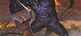 | Fingon and Gothmog by Ted Nasmith High King of Elves, Fingon, is fighting Gothmog, Lord of Balrogs. He will lose this fight. Year 1471 of First Age. Usage: Homepage. |
| 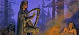 | Felagund among Beor's Men by Ted Nasmith Felagund is Finrod's nickname. He went with Beren on the Quest of the Silmaril. First Age. Usage: The Ladder. |
| 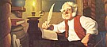 | Bilbo at Rivendell by Greg Hildebrandt Bilbo Baggins is writing his memories in Rivendell. Around 3010 of Third Age. Usage: Spoiler sections. © Brothers Hildebrandt - spiderwebart.com |
| Tuor Reaches the Hidden City of Gondolin by Ted Nasmith Voronwe came with Tuor to Gondolin. Tuor also carried message from Ulmo to Gondolin's ruler Turgon. Around 1500 of First Age. Usage: Screenshots gallery. |
|
| 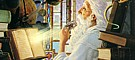 | Old Mage by Keith Parkinson Tolkien unrelated. Usage: Haltext search. |
| 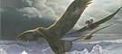 | Taken from backcover of Silmarillion by Ted Nasmith Hurin and Huor, when young, was captured by orcs and rescued by eagles, led by Thorondir, the King of Eagles, who took them to Gondolin for safety. Around 1450 of First Age. Usage: Browse source/help/edit files. |
| The Shores of Valinor by Ted Nasmith Elven ship of Teleri, sea elves, cruising shores of Valinor. First age. Usage: CVS. |
|
| 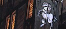 | At the Sign of the Prancing Pony by Ted Nasmith The pub in Bree, from Fellowship of the Rings. Usage: Fun section. |
| 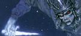 | The Attack of the Wraiths by Ted Nasmith From Fellowship of the Rings. Hobbits are attacked by ringwraiths at Weathertop. Year 3018, October 6, of Third Age. Usage: #angband gallery and this page. |
| 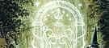 | Password into Moria by Ted Nasmith Gandalf is trying to solve the passphrase for the west Gate of Moria. The password was Mellon, elven for friend. From Fellowship of the Ring. Usage: Links section. |
| 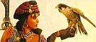 | Mistress by Keith Parkinson Tolkien unrelated. The painting is slightly modified to fit the face and the bird into the small image. Usage: News archive and r.g.r.a looking glass. |
| 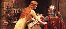 | God Speed by Edmund Blair Leighton Tolkien unrelated. This is the painting by one of leading pre-raphaelite artists, painted in year 1900. Usage: Cmovies section. |
| 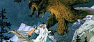 | Eagles to the Rescue by Ted Nasmith From Hobbit. Usage: The Angband Comic section. |
Many thanks to Jonathan Ellis for help with this page.